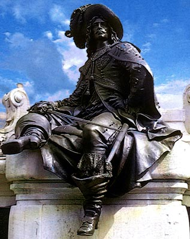

Forums galactiques > Taverne galactique : lieu de discussion informel > Un peu de paix dans ce monde de brutes!
Pages : 1 2
| vlad Réputation à la taverne : 411  27/06 ETU 21:56 | Score : 17 Détails Bonjour à tous les commandants de la galaxie des Exilés!
Je suis ici ce soir pour vous parler d'un petit projet qui me tiens à coeur. Celui de pouvoir cohabiter les uns avec les autres sans pour autant toujours se bombarder à coups de ioniques. Pour ce faire je me suis procuré un système vierge, et vais offrir au 19 premiers commandants interessé par ce projet une planète dans ce système. Si je vois que l'objectif des 19 commandants est depassé, ne vous inquietez pas je racheterai un système pour pouvoir y installer les autres et ainsi de suite. Voila j'éspère que beaucoup de gens viendront me rejoindre, je n'attend qu 'une chose de vous. De ne pas vous tapper dessus dans les systèmes de l'amitié! Voila bonne soirée et pour les interessés inscrivez vos noms en dessous silvouplait. | ||
| Edgar Arakkus Réputation à la taverne : 1407  27/06 ETU 22:11  | Score : 3 Détails Sacré Vlad !
Je suis impatient de t'avoir comme voisin. Edgar Arakkus Edit : Il va être content, Crimson Fox, que tu fasses ca dans son natal :p | ||
| La TV Réputation à la taverne : 118  27/06 ETU 22:12 | Score : 1 Détails Ici tower of technolia.
Nous sommes pacifiques et nous cherchons de nouvelles planétes pour installer nos éméteurs,nous n'aimons pas envahir les planétes. Nous serions donc ravi de pouvoir rejoindre et contribuer à une paix dans un systéme au moins. | ||
| Duc de Guise Réputation à la taverne : 186  27/06 ETU 22:13 | Score : 4 Détails Bonsoir sieur Vlad,
Eh bien vous venez de dementir ce que j'ai vertement reproché à Lizaka dans la salle des Libres pensée. Ce projet, tout simple qu'il puisse paraître, est l'exemple que nous attendons de la part des détenteurs de la Capitale Galactique et du système Zéro! Non pas que votre Arche j'en ai rien a secouer mais c'était un peu fermé comme projet... Sans doute cela encouragera d'autres projets similaires. Je serais ravi de faire partie de cette experience. Vous pouvez compter le Duc de Guise dans la liste de vos voisins. | ||
| Roots Boy Réputation à la taverne : 923  27/06 ETU 22:36 | Score : 6 Détails Le Roots passait par là, et il vue sont pote Vlad faire son petit discour. Lui qui aimait plutôt la paix et la cohabitation colective, il ne pouvait que y adhérer. Cela lui rappelait ses communautés de jeunes auxquelles il appartenait.
"Yo Vlad je suis trop partant, mais je voudrais bien une planète verdoyante, tu comprends pourquoi... Ca pousse bien là bas... En tout cas c'est une bonne idée et j'ai hate d'inviter mes voisins à prendre l'apéro. C'est qu'on se fait chier dans ces grands systèmes où il n'y a que nous...." | ||
| sloopy Réputation à la taverne : 171  27/06 ETU 22:50 | Score : 4 Détails Hum... Un systéme de l'amitié voilà un concept interessant. Pourquoi pas si inscrire aprés tout! J'aurais des voisins très célébres peut-être?
Sinon cher ami Insurgés vous ne louriez pas par hasard une planéte du zéro? Je ne l'ai encore jamais visité ce systéme! Ceci est une vrai offre! SLOOPY | ||
| NojaH Corporation Réputation à la taverne : 205  27/06 ETU 22:50 | Score : 3 Détails Salutation Cdt Vlad
Bien entendu la Nojah Corporation serait ravie de rajouter une pelouse bien touffue sur ce système Peut être pourrions nous faire un concours de jardinage avec le sieur Roots qui semble etre un expert en la maniere et décorer le système de quelques plantes vertes Bien a vous | ||
| Leorin Avalon Réputation à la taverne : 65  27/06 ETU 22:54 | Score : 3 Détails Bonsoir commandant,
Un jeune guildéen tel que moi pourrait il avoir sa place dans votre projet? Un projet novateur et d'une grande simplicité qui, j'en suis sur, se déroulera sans encombre. | ||
| Andrew Snooper Réputation à la taverne : 424  27/06 ETU 22:55 | Score : 3 Détails Voila une idée, j'aurais enfin un endroit pour me reposer et ecrire mes articles dans le plus grand calme!
Igor pourra mettre plein d'unité et tirer des bombes depuis ce système, personne ne ionisera. Quel plan machiavélique!! | ||
| Lizaka Réputation à la taverne : 2723  27/06 ETU 23:06 | Score : 2 Détails J’aimerais en être aussi. On prend l’apéro chez qui ?
| ||
| Andrew Snooper Réputation à la taverne : 424 27/06 ETU 23:21 | Score : 1 Détails A c'est possible de prendre l'apéro avec Lizaka? Il se rabaisse à notre niveau quel honneur. Qu'est ce qu'il est gentil le Liz d'être pres de la populace comme ca ...
Si on prend l'apéro Liz, tu amène l'astro pastis, faudrait pas nous faire payer quand même | ||
| New Republik Réputation à la taverne : 859  27/06 ETU 23:23 | Score : 1 Détails Les Institutions de la NRE souhaitent vivement participer à ce projet correspondant en tous points à ses valeurs empruntes de pacifisme !
J'offre l'apéro... | ||
| NojaH Corporation Réputation à la taverne : 205 27/06 ETU 23:23 | Score : 1 Détails peut etre que Lizaka a gardé le reste de son tonneau de la HELLFIRE party et qu'elle saura en faire profiter tous ses futurs voisins...
Personellement je ne bois pas ( enfin pas dans ce tonneau) | ||
| Gnux Réputation à la taverne : 43  27/06 ETU 23:24 | Score : 2 Détails Un endroit dépourvu de radiations ioniques ??
Ca existe ça ? Faut surtout pas rater une occasion pareille !! Commandant Vlad, je suis partant ! | ||
| Ju Réputation à la taverne : 824  27/06 ETU 23:30 | Score : 2 Détails Je serais ravi de participer à ce projet...
Apres tout, un representant de feu le HFC doit pouvoir y trouver sa place... D'autant plus que je serais ravi de pouvoir gouter à ce tonneau moi... m'en manque un depuis le weekend open partay... | ||
| Archibald Meguirt Réputation à la taverne : 280  27/06 ETU 23:59 | Score : 1 Détails Ca va vite, je viens avec vous!
Réservez moi une petite planète pour profiter du pot de l'amitié.... J'offre les cigares! | ||
| vlad Réputation à la taverne : 411 28/06 ETU 00:00 | Score : 4 Détails Je suis ravi de voir que beaucoup de commandants ont répondu oui à cet élan de pacifisme, et espère que d'autres vont encore s'inscrirent.
L'alcool est derrière la porte du cellier de votre demeure principale. La clé est dans la boîte aux lettres. bonne dégustation. | ||
| Acanith Réputation à la taverne : 1200  28/06 ETU 00:39 | Score : 2 Détails Je viens, je viens! Il vous faut un blouseux pour calculer votre taux d'alcoolémie, non?
| ||
| Ellys Réputation à la taverne : 1592  28/06 ETU 09:07 | Score : 2 Détails Moi aussi moi aussi je viens !!!!
Est ce qu'il reste une planète mortadelle...? | ||
| Retoris Réputation à la taverne : 237  28/06 ETU 09:45 | Score : 1 Détails
Bonjour, je suis le représentant du club des taverniers et je désire promouvoir mon club dans ce système. Je demande donc si notre club pourrait recevoir une planète. Merci d'avance, Retoris. |
Pages : 1 2
Forums galactiques > Taverne galactique : lieu de discussion informel > Un peu de paix dans ce monde de brutes!